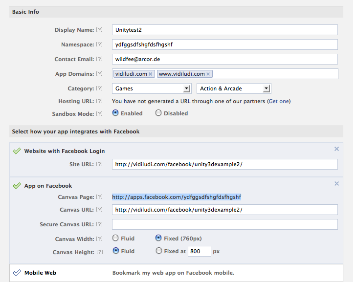

Thank you for purchasing this package. If you need further support please contact info@polyload.com.
Feel free to add polyload.com to your credits if you were happy with this product. :)
Make sure your webhost has PHP5 enabled and that CURL is installed. Both should be default on most webhosts.
You can preview the resulting Facebook App here: http://apps.facebook.com/unity_example/
(Make sure your Facebook is not in secure surfing mode, because the example App doesn't have HTTPS)
Go to https://developers.facebook.com/apps and join the Facebook Developers. Create a new App and activate "App on Facebook" & "Website with Facebook Login" after editing it. Enter your App's name in the "namespace" field and fill out all empty gaps like on the screenshot on the bottom. Safe the "App ID", "App Secret" and "Canvas Page" - you will have to integrate them later into your files.
Here is an example how the basic settings of your App should look like:

File "facebook_unity3d.unitypackage" :
With this unitypackage you can build and extend the example project (FacebookExample02.unity3d). You have to replace the specific "// TODO"s in WebCommunication.js (find it in the unityPackage) with your own URL and data.
Folder "unityfacebook" :
Upload this folder to your webspace for initial testing. Your "Canvas Url" has to point to this folder later like this: "www.yourpage.com/unityfacebook/"
Replace the unityfacebook/FacebookExample02.unity3d with the one you built (otherwise the "Publish to Wall" won't work since you didn't edit WebCommunication.js).
File "unityfacebook/FacebookExample02.unity3d" :
This is the unity webplayer game you have to build yourself with the facebook_unity3d.unitypackage.
File "unityfacebook/inc.php" :
Open this file with your favorite texteditor and replace the values in the lines ending with "// TODO". You get all these values from your facebook application application settings. Keep high attention on the slashes in the end of the URL.
File "unityfacebook/publishtowall.php" :
Open this file with your favorite texteditor and replace the values in the lines ending with "// TODO". You get all these values from your facebook application application settings.
File "unityfacebook/index.php" :
This file contains the stuff you would normally find in the FacebookExample02.html built by unity plus a few javascript functions for communication (line 36-54).
File "unityfacebook/xd_receiver.htm" :
Facebook needs this file to be there. Don't remove it.
Files "unityfacebook/header.php and footer.php" :
Belong to index.php. Also contain unity webplayer generated stuff.
Folder "unityfacebook/facebook" :
This folder contains the Facebook Graph Api stuff. Don't remove it.
Have a lot of fun :)
Don't forget to follow me on Twitter: @vidiludi